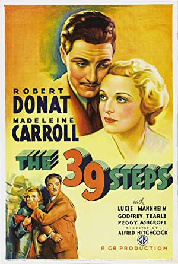

Season 43 (2008-2009)
-
September 14, 2008Directed by Ishirô Honda; Starring Akira Takarada, Momoko Kôchi, Akihiko Hirata, Takashi Shimura
Godzilla (Gojira)
Japan, 1954, 96 min, B&W, Not Rated, Japanese w/subtitles
Godzilla is a notorious film, one that paved the way for many giant-monster-movie imitators. But there is a larger subtext to Godzilla that is often overlooked or forgotten. The movie was made in Japan less than ten years after the nuclear bombing of two Japanese cities. Considering this viewpoint, the film has a melancholy core, one in which the Japanese contemplate their destruction by unstoppable external forces. The notion of a giant irradiated sea monster was more than just a cartoonish thrill in 1954 Japan, and many scenes in the film are surprisingly powerful. That said, Godzilla is still campy and entertaining fun at its best. Some of the acting is ham-handed and lost in translation. The special effects are primitive by today's standards, with a man in a 220-pound rubber suit stomping on a realistic miniature city, but they come together to create an effective illusion. Watching the monster smash its way through Tokyo still has a certain visceral appeal fifty years later. Don't forget the popcorn!
Film Notes (Britt Crews): Embedded somewhere in America's collective unconscious is a campy black and white film starring Raymond Burr and some guy in a dinosaur suit stomping on Tokyo. Some of us remember Godzilla as childish silliness that we long ago outgrew; others remain lifelong fans. Many of us might be wondering: Why this picture to open Cinema Inc.'s 43rd season?
Few have had the opportunity to see more than the isolated pieces of this film that survived American intervention. The original movie from Japan was eviscerated by its American distributors. Only its legendary monster survived. Forty minutes – almost half the picture – were hacked out of it completely. Slapped onto it were twenty minutes of a pointless and witless subplot involving Raymond Burr as a crusading journalist who just happened to be in Japan in time to cover the story of the century. What little remained of the original picture was recut and rearranged. Two actors (both Chinese-Americans) overdubbed all the remaining original Japanese parts in one five-hour session with no effort made to match the dialogue to the original performers' lip movements. Even the monster's name changed, anglicized by Toho Studio's foreign sales department when the film was offered to the Americans.
The original Gojira, on the other hand, is a thing of dark beauty, a great, morally complex film by sci-fi master Ishiro Honda. In Japan it is regarded as a masterpiece, consistently rated as one of the finest films ever produced in that country of Kurasawa, Ozu, Oshima, Mizoguchi, Miyazaki and Imamura.
Created nine years after Hiroshima and Nagasaki as well as the firebombing of Tokyo that preceded them, Gojira, like its monster namesake, is a direct result of H-bomb testing as tensions continued to escalate during the Korean War. On March 1, 1954, near the Bikini Atoll, the United States detonated a 15-megaton hydrogen bomb with 750 times the explosive power of the atomic bombs that destroyed Hiroshima and Nagasaki. Described as a "routine atomic test" by the Atomic Energy Commission, the bomb, code-named Operation Bravo, proved far more powerful than expected, vaporizing a large chunk of Bikini and sending highly radioactive debris floating over a 7000-square-mile area of the Pacific Ocean. About 110 miles east of Bikini, the 23-member crew of a small Japanese fishing trawler ironically named Lucky Dragon were showered with a white sticky radioactive ash. Within hours several became sick and within months they began to die. Understandably in Japan the Lucky Dragon tragedy reawakened and ignited fear, panic, and outrage over nuclear testing. By August 1955, 32 million Japanese signatures had been collected on petitions to ban the bomb.
Armed with newspaper clippings of the Lucky Dragon, producer Tomoyuki Tanaka convinced Toho Studio to green-light his idea for a monster mutated by atomic testing, a monster that would be a living, breathing metaphor for the bomb. Gojira, known to the world as Godzilla, King of the Monsters, was born. -
 October 12, 2008Directed by Tim Burton; Starring Johnny Depp, Martin Landau, Sarah Jessica Parker, Patricia Arquette
October 12, 2008Directed by Tim Burton; Starring Johnny Depp, Martin Landau, Sarah Jessica Parker, Patricia Arquette
Ed Wood
USA, 1994, 127 min, B&W, R
Ed Wood is in part a biopic about Edward D. Wood, Jr., the notorious B-movie director of the 1950s. It is also an homage to those movies and one of their great stars, Bela Lugosi (played by Martin Landau, who won an Oscar for his performance). Lugosi was a big star in the 1930s and 40s, but in the 50s he was an aging man fighting obscurity and addiction. Ed Wood worshiped Lugosi, befriended him, and put him in his quickly and poorly made movies. Lugosi came to depend on this friendship. Although Wood frequently dressed in women's clothing, surrounded himself with oddball characters, and was a terrible director, his likability and warmth shine through in the capable hands of Tim Burton and Johnny Depp. Ed Wood celebrates the eccentric rather than lampooning it.
Film Notes (Ian Krabacher): Movies were his passion. Women were his inspiration. Angora sweaters were his weakness.
Ed Wood is a 1994 American comedic biopic directed by Tim Burton and starring Johnny Depp as the cross-dressing cult movie maker Edward D. Wood, Jr. The film, shot in black and white, was based in large part on Rudolph Grey's quasi-biography Nightmare of Ecstasy. Ed Wood concerns the period in Wood's life when he made his best-known films and also focuses on his legendary relationship with actor Béla Lugosi, played by Martin Landau.
The film was the brainchild of screenwriters Scott Alexander and Larry Karaszewski, who originally planned to make it with college classmate Michael Lehmann. A lifelong fan of Wood's films, Burton decided to direct the biopic after his plans for Mary Reilly fell through. He immediately contacted Depp and asked him to star in the film as Wood and the actor agreed. Depp decided to draw inspiration for his performance from Andy Hardy, Ronald Reagan, Casey Kasem, and the Tin Man from The Wizard of Oz. Martin Landau, to prepare for portraying Lugosi, watched 25 of the man's films and worked closely with legendary makeup artist Rick Baker.
Burton admits to having always been a fan of Ed Wood, which is why the biopic is filmed with an aggrandizing bias borne of his admiration rather than derision of Wood's work. Burton acknowledged that he probably portrayed Wood and his crew in an exaggeratedly sympathetic way, stating he did not want to ridicule people who had already been ridiculed for a good deal of their life. Burton decided not to depict the darker side of Wood's life because his letters never alluded to this aspect and remained upbeat.
To this end, Burton wanted to make the film through Wood's eyes. He said in an interview, "I've never seen anything like them, the kind of bad poetry and redundancy – saying in, like, five sentences what it would take most normal people one… Yet still there is a sincerity to them that is very unusual, and I always found that somewhat touching; it gives them a surreal, weirdly heartfelt feeling."
Burton's respect for Wood is also hinted at in his film Edward Scissorhands - the director has stated that he named the lead character in the film Edward because that's Wood's full first name. The relationship between Wood and Lugosi in the script echoes closely Burton 's relationship with his own idol and two-time colleague Vincent Price. He said in an interview, "Meeting Vincent had an incredible impact on me, the same impact Ed must have felt meeting and working with his idol."
The film was originally in development with Columbia Pictures but when Burton wanted to shoot it in black and white, the studio wasn't going to back it unless they had a first-look deal because they claimed it would be a hard sell in foreign markets and on video. The director insisted on total control and a month before shooting was scheduled to start, Columbia put the film in turnaround. Warner Brothers, Paramount Pictures, and 20th Century Fox became interested in optioning the film, but Burton went with Disney because they gave him total creative control on the condition that he work for scale.
Ed Wood gave Burton the opportunity to make a film that was more character-driven as opposed to style-driven. He said in an interview, "On a picture like this I find you don't need to storyboard. You're working mainly with actors, and there's no effects going on, so it's best to be more spontaneous." Shooting began in August 1993 and lasted 72 days.
The film had its world premiere at the New York Film Festival in 1994. Though a box office failure at the time of its release, grossing only $5.8 million in North America against a production budget of roughly $18 million, Ed Wood was critically hailed and, despite the film being a commercial disaster, Burton is very proud of the movie. He said, "I love the movie… It's just that no one came. I guess if I was like everybody else, I would just blame a bad marketing campaign. But that's too easy."
Martin Landau in particular was widely praised for his performance, earning top honors from the Screen Actors Guild, the National Board of Review, Los Angeles Film Critics Association, and winning a Golden Globe and an Academy Award. Make-up artist Rick Baker, who worked to transform Landau into Lugosi, also won an Academy Award for Best Make-Up. -
November 9, 2008Directed by Sidney Lumet; Starring Henry Fonda, Walter Matthau, Larry Hagman, Daniel O'Herlihy, Fritz Weaver
Fail-Safe
USA, 1964, 112 min, B&W, Not Rated
An off-course airplane triggers the US nuclear defense system. After the error is recognized, a single US bomber that is past the fail-safe point terminates radio transmissions and heads for Moscow. The US president gets on the phone with his Russian counterpart and tries to avert catastrophe. While this film has many parallels with the black comedy Dr. Strangelove, it is not a comedy but a tense drama that realistically portrays the nuclear fears of the 1950s and 60s. A rich ensemble cast gives great performances, capped by an against-type, scene-stealing turn by Walter Matthau.
Film Notes (Gerry Folden): Released October 7, 1964, Fail Safe met with critical acclaim but poor box office following as it did by nine months the well-received and thematically similar Dr. Strangelove or: How I Learned to Stop Worrying and Love the Bomb. But Fail Safe stands apart from the comedy Dr. Strangelove because of its stark dramatic style. Just two years earlier (October 22, 1962), President Kennedy explained to a nervous nation that the US stood ready to go nuke-for-nuke with the Soviet Union if they refused to remove missiles from Cuba.
While 'Duck and Cover' exercises replaced recesses in schools and families forfeited vacations to build fallout shelters, the logic and ethics both personally and nationally of living in a pre-Apocalyptic world was an all too real consideration. Remember, if you can, the September 1961 television episode of The Twilight Zone written by Rod Serling titled "The Shelter" in which neighbor battled neighbor for a place in a basement bunker or the petal-plucking little girl in the explosively controversial political commercial aired but once in September 1964, exactly one month before the opening of Fail Safe.
Giving renewed interpretation to the Greek theme of individual hubris as the certain path to total destruction, Fail Safe makes the case for the collective hubris by governments, military organizations, and the scientific community resulting in a precarious dance on the jagged edge of worldwide emulation… Götterdämmerung. The combined failure of machines and the mistakes of men position the world on a precipice, the escape from which is every bit as unthinkable as the predicament itself. As the President, Henry Fonda must attempt the defeat of a US Strategic Air Command mission and persuade the Soviet government and military of our very deepest regret should Moscow be destroyed. Contrapuntal to the efforts of the President, a civilian consultant to the Defense Department (Walter Matthau) argues in favor of the persuasive power of MAD (Mutual Assured Destruction) in bringing the USSR to acquiesce to the inevitable. This consultant, like the Greek chorus within the drama, explains to all the irrepressible 'logic' of the inevitable escalations naturally subsumed within a cold war with hot nukes.
This compelling character, Prof. Groeteschele, like his counterpart Dr. Strangelove, is based on a real player in the panoply of Pentagon heavyweights circa 1960. Herman Kahn, an employee of the RAND Corporation, was a military strategist and systems theorist known for analyzing the likely consequences of nuclear war and recommending ways to improve survivability. His thinking was very influential in high places.
Unless and until men are always angelic and all our machines are benign and never falter, this film presents issues worth our continuing consideration, as important today as 44 years ago… the cold war is now in the microwave. -
 December 14, 2008
December 14, 2008
The Last Klezmer
USA, 1994, 85 min, Color, Not RatedDirected by Yale Strom; Starring Leopold Kozlowski
In this documentary, filmmaker Yale Strom goes to Poland in search of one of the last known klezmer musicians. Poland was once the heart of traditional klezmer music, but this peculiarly Jewish music was virtually wiped out by the Nazi occupation during WWII. This film puts a human face on the grim statistics of the Holocaust through the charismatic and entertaining Leopold Kozlowski. Kozlowski is the last living klezmer musician to have grown up in Eastern European Jewish culture before the Holocaust. At the time of the making of the film, Kozlowski was still living, teaching, and making klezmer music in Poland. The music is lively, beautiful, and moving; Kozlowski is a man you won't soon forget.
Film Notes: The word klezmer, which means "instruments of song" in Hebrew, refers to both a practitioner and a style of festive Jewish band music, rooted in prewar Eastern Europe. By the 19th century, klezmer musicians had carved out a musical niche for themselves, playing folk tunes, waltzes, mazurkas, and other dance music at weddings, parades, and fairs for Jewish (and often Gentile) audiences. Klezmer music is based on Polish, Hungarian, and Romanian folk tunes and the Jewish musical repertoire of freylekhs, sher, and khosidl or dance tunes.
The Last Klezmer is a portrait of a remarkable man, Leopold Kozlowski of Krakow, the last active klezmer trained in the original prewar tradition. Kozlowski is no relic, but a robust, rotund, Falstaffian character, brimming with energy and enthusiasm. The filmmakers accompany him on an emotional visit to the village where he was raised in a close-knit family of musicians, to the sites where his family was murdered, and to the forests where he fought with the partisans.
Director Strom, who is a violinist as well as a filmmaker, found Kozlowski while researching another film, At the Crossroads: Jews in Eastern Europe Today. "I knew at the time that I had to do a film with him," Strom said. "There were 5,000 or 6,000 Jewish musicians in Poland in 1934. There was one Jewish traditional musician in 1994. That's pretty heavy. You better capture it." Strom was not the only director to have sought out the musician. "Spielberg, when he was doing Schindler's List, came up to Kozlowski, not the other way around," Strom said. "He made him the music consultant for camp scenes. He's the only survivor in the film who had a speaking line and still lived in Poland."
For The Last Klezmer, Strom visited Kozlowski in Poland, where he conducted at the Yiddish theater and taught private lessons. Strom captured him leaning over a pianist and saying, "The Jewish twist, from here, in your heart," and singing a sobbing phrase. There are also scenes of Kozlowski leading the cast of Fiddler on the Roof in a rehearsal of "Sunrise, Sunset." But Strom's film is most affecting when Kozlowski is at home and on the road. While chopping in the kitchen, the conductor says, "A Jew without garlic, you know what this is? A sin."
"He's a great musician, but no way could you have 90 minutes of klezmer," Strom said. "I wasn't interested in doing a movie just on the revival of klezmer. If I had just shown the interview, that would have not really given the full perspective of what made this man – why he plays the way he does, why he jokes and why he cries." Kozlowski's tears flow freely when he returns to the place he grew up, Przemlyany, the Ukranian town he left when he emigrated to Poland a half-century before. His mother, father, and brother – a virtuoso violinist – were killed during the German occupation. He places candles in the vicinity of their unmarked graves, and takes a handful of dirt from each.
Just as moving are his stories of a nearly extinct musical culture. Kozlowski was born Kleinman, at a time when klezmer bands flourished. Tailors, butchers, and other tradesmen would gather after work to rehearse. As Kozlowski spins tales of players like Hershele Dudelsack, Strom pans across faded pictures of the handsome, happy, lost musicians. Kozlowski's troubles did not end when the war did. In Poland he became music director of the Polish Army Symphony Orchestra, only to be fired in a 1960s antisemitic purge. He was still wary. While traveling on a bus in Ukraine, a fellow passenger sees the camera and asks him what he's filming. He says it will be a documentary about Ukranian folk music. "I can understand why he does that," Strom said. "He will the rest of his years have this sense of fear, looking behind his back. We're riding to JFK airport and we're speaking in Yiddish about politics, and he turns and starts whispering and cupping his mouth. And I said, "Leopold, the guy speaks Spanish. He's Puerto Rican."
The film also has joyous moments. Kozlowski is reunited with a friend he hadn't seen since he left for Poland. And he is amazed to discover, upon arriving in Ukraine, a television broadcast of a klezmer concert.
If you are interested in learning more about klezmer, Algonquin Books of Chapel Hill has published The Essential Klezmer: A Music Lover's Guide to Jewish Roots and Soul Music, from the Old World to the Jazz Age to the Downtown Avant-Garde by Seth Rogovoy.
There are also several klezmer bands in the area. One is the Magnolia Klezmer Band. January 11, 2009Directed by Charles Burnett; Starring Henry G. Sanders, Kaycee Moore, Charles Bracy, Angela Burnett
January 11, 2009Directed by Charles Burnett; Starring Henry G. Sanders, Kaycee Moore, Charles Bracy, Angela Burnett
Killer of Sheep
USA, 1978, 80 min, B&W, Not Rated
Think of the film Killer of Sheep as poetry - quintessentially American urban poetry - in the vein of Langston Hughes or Richard Wright. The elements of traditional narrative are missing, but there is just enough story and realism to make the bold visual images and diverse soundtrack come alive. Charles Burnett was a UCLA graduate student in 1977 when he shot this film on a budget of $5000, using untrained actors and real locations in the Watts neighborhood of Los Angeles. In 2006, Burnett restored and remixed his film, adding music that cost many times the original budget. Chicago Tribune critic Michael Phillips said, "…Burnett's blues poem can be experienced simply (as one family's story) or more expansively (as the chronicle of a neighborhood). It is a small wonder containing multitudes."
Film Notes (Ian Krabacher): Killer of Sheep examines the black Los Angeles ghetto of Watts in the mid-1970s through the eyes of Stan, a sensitive dreamer who is growing detached and numb from the psychic toll of working at a slaughterhouse. Frustrated by money problems, he finds respite in moments of simple beauty: the warmth of a coffee cup against his cheek, slow dancing with his wife in the living room, holding his daughter. The film offers no solutions; it merely presents life – sometimes hauntingly bleak, sometimes filled with transcendent joy and gentle humor.
Killer of Sheep was shot on location in Watts over a series of weekends on a budget of less than $10,000, most of which was grant money. Finished in 1975 and shown sporadically after 1977, its reputation grew and grew until it won the Critic's Award at the 1981 Berlin International Film Festival. In 1990, the Library of Congress declared it a national treasure and placed it among the first 50 films entered in the National Film Registry for its historical significance. In 2002, the National Society of Film Critics selected the film as one of the 100 Essential Films of all time.
Despite its international and domestic critical acclaim, Killer of Sheep had really only been seen by audiences on poor quality 16mm prints at few and far between museum and festival showings. At the time of its completion in 1975, the film could not be released to general audiences because the filmmakers had not secured rights to the music used in the film (including songs by Etta James, Dinah Washington, Gershwin, Rachmaninov, Paul Robeson, and Earth, Wind & Fire).
Originally, Writer/Director Charles Burnett submitted Killer of Sheep as his thesis for his MFA in film at UCLA. With a mostly amateur cast (consisting of Burnett's friends and acquaintances), much handheld camera work, episodic narrative, and gritty documentary-style cinematography, Killer of Sheep has been compared by film critics and scholars to Italian neorealist films like Vittorio De Sica's The Bicycle Thief and Roberto Rossellini's Paisan. However, Burnett cites Basil Wright's Songs of Ceylon and Night Mail and Jean Renoir's The Southerner as his main influences.
However, thirty years after Killer of Sheep's 1977 highly limited release, the music rights for the film were purchased outright in 2007 at a cost of $150,000. The film was then brilliantly restored and enlarged by UCLA Film & Television Archive to 35-mm (with financial support from Milestone Films and well-known film director Steven Soderbergh). Milestone Films went on to premiere the restored print at the 2007 Berlinale Film Festival.
On March 30, 2007, Killer of Sheep opened in select theaters in the United States and Canada and was released on DVD on November 13, 2007, as part of a deluxe box set with a director's cut of Burnett's sophomore feature My Brother's Wedding, and three Burnett shorts: Several Friends (a 1969 aesthetic precursor to Killer of Sheep), The Horse (an "allegory of the South" in Burnett's words), and When It Rains (praised as one of the greatest short films of all time by critic Jonathan Rosenbaum).
On January 21, 2008 (Martin Luther King, Jr. Day), Turner Classic Movies presented the world broadcast premiere of the movie as part of a night-long marathon of Burnett's movies. Burnett was interviewed before and after the movie by TCM's Prime Time host Robert Osborne.
Since his early work on Killer of Sheep, Burnett has been active and has enjoyed success working on several other film projects over the years. In 1988, Burnett was awarded the prestigious John D. and Catherine T. MacArthur Fellowship (also known as the "genius grant"), which helped him support his young family and concentrate on his newest script To Sleep With Anger. This film garnered Burnett many awards, including Independent Spirit Awards for Best Director and Best Screenplay. The National Society of Film Critics also honored Burnett for best screenplay, making him the first African American to win in this category in the group's 25-year history. While the Los Angeles Times reported that Burnett's movie reminded viewers of Anton Chekov, Time magazine wrote: "If Spike Lee's films are the equivalent of rap music – urgent, explosive, profane, then Burnett's movie is good, old urban blues."
Today, Burnett lives west of Watts with his wife, costume designer Gaye Burnett. They have two sons. Burnett commented, "I don't think I'm capable of answering problems that have been here for many years. But I think the best I can do is present them in a way where one wants to solve these problems."Read Roger Ebert's review of Killer of Sheep at Great Movies. February 8, 2009Directed by Michel Gondry; Starring Jim Carrey, Kate Winslet, Kirsten Dunst, Mark Ruffalo, Elijah Wood, Tom Wilkinson
February 8, 2009Directed by Michel Gondry; Starring Jim Carrey, Kate Winslet, Kirsten Dunst, Mark Ruffalo, Elijah Wood, Tom Wilkinson
Eternal Sunshine of the Spotless Mind
USA, 2004, 108 min, Color, R
This film follows a couple, Clementine (Winslet) and Joel (Carrey), who meet, fall in love, and break up. This simple premise has been used many times before, but in the hands of screenwriter Charlie Kaufman (who also wrote Being John Malkovich and Adaptation), it is re-worked into something more impenetrable. When it is then passed through music-video veteran director Michel Gondry's hands, it becomes lunacy bordering on genius. After the breakup, the despondent Clementine contacts Lacuna, Inc., a firm that can remove unwanted memories from the brain, and has her memories of Joel removed. Joel finds out. In retaliation, he has his memories of her removed as well. However, mid-procedure, he has a change of heart, and tries to hide memories of her deep in his psyche, away from the Lacuna "doctors". Gondry and Kaufman use the story to explore the nature of thought, reality, and love. The film moves freely back and forth in time and displays a breathtaking creativity unlike any film before it.
Film Notes (Andrea Mensch): A somewhat unconventional introduction to an unconventional narrative…
As I get older, I increasingly appreciate the complex function of memory in our lives. (Senior moments, anyone?) Not only is memory an important aspect of identity formation, but it can also provide a wonderful kind of escape from the difficulties of contemporary living, a kind of metaphoric time travel, if you will. As the work of the 2000 Nobel Prize-winning neuroscientist Eric Kandel demonstrates, memory can also be traced physiologically in the brain. His recent scientific memoir In Search of Memory (2007) explains in lay terms how memory can be observed at the cellular level and also how important emotional conditions and even certain hormones are in the formation of memories.
In French director Michel Gondry's 2004 film The Eternal Sunshine of the Spotless Mind, these ideas are explored with great visual flamboyance and an appropriately audacious narrative structure. Gondry initially achieved artistic acclaim directing music videos for rock stars like Björk, The Rolling Stones, and Sinead O'Connor, and he brings much of this sensibility to his films. He uses both traditional special effects, such as paintings and carefully designed miniature models for props and sets, as well as digital manipulation to create his magical effects.
Eternal Sunshine is Gondry's second collaboration with the writer Charlie Kaufman. Their first was the film Human Nature (2001), which also concerned itself with the topic of human consciousness albeit in the different context of civilization versus savagery. Kaufman is a highly idiosyncratic writer whose work has been termed surrealist. His themes often concern themselves with the problematic role of fiction in the age of postmodernism as well as the nature of consciousness itself. His recent directorial debut Synecdoche New York (2008) also testifies to this. Although Eternal Sunshine challenges the paradigm of the linear narrative, it is perhaps more accessible than Kaufman's other work because it is also a quirky post-modern romantic comedy. One of its postmodern features is its important intertextual reference to Alexander Pope's 1717 lengthy poem "Eloise to Abelard." The poem is an articulation of Eloise's continuing passion for her former teacher, lover, and secret husband despite the fact that the two have been separated forever by an unforgiving society after Abelard has been castrated for having despoiled Eloise, the virgin from an upper class family. The title of our film is derived from the following section of the poem where Eloise envies the innocence of the sexually untouched nuns who surround her:
How happy is the blameless vestal's lot!
The world forgetting, by the world forgot.
Eternal sunshine of the spotless mind!
In many ways Eloise resembles Clementine Kruczynski, the female protagonist of Gondry's film in her reckless passion for her much more cerebral male partner. And in a 21st century twist on the original idea of the spurned lover's feelings of revenge, Clementine decides to have the memories of her love affair conveniently erased to spare herself the continuing pain. However, both lovers underestimate the necessity of painful memories particularly in a romantic world view. As Eloise might have told them:
Far other dreams my erring soul employ,
Far other raptures, of unholy joy:
When at the close of each sad, sorrowing day,
Fancy restores what vengeance snatch'd away,
Then conscience sleeps, and leaving nature free,
All my loose soul unbounded springs to thee.
Alexander Pope perhaps indentified somewhat with Eloise, too, and he took some comfort in the hope that the story of this complicated love might be told over and over again in a future age when he ends the poem with the following lines:
And sure, if fate some future bard shall join
In sad similitude of griefs to mine,
Condemn'd whole years in absence to deplore,
And image charms he must behold no more;
Such if there be, who loves so long, so well;
Let him our sad, our tender story tell;
The well-sung woes will soothe my pensive ghost;
He best can paint 'em, who shall feel 'em most.
Gondry and Kaufman give us one more instance of this telling and retelling of a never-ending love story with their poetic "imaging."Read Roger Ebert's review of Eternal Sunshine of the Spotless Mind at Great Movies. March 8, 2009Directed by François Dupeyron; Starring Omar Sharif, Pierre Boulanger, Gilbert Melki, Isabelle Renauld, Isabelle Adjani
March 8, 2009Directed by François Dupeyron; Starring Omar Sharif, Pierre Boulanger, Gilbert Melki, Isabelle Renauld, Isabelle Adjani
Monsieur Ibrahim (Monsieur Ibrahim et les fleurs du Coran)
France, 2003, 95 min, Color, R, French w/subtitles
A coming-of-age story of a Jewish teenager in a lower-class Paris neighborhood, Monsieur Ibrahim is also a story of father-and-son relationships. When the teen Momo (Boulanger) has trouble connecting with his depressed father, he seeks inspiration in the streets. He is befriended by the local shopkeeper, Ibrahim (Sharif), who dispenses the wisdom and guidance that Momo's father should. And although it never becomes the focus of the film, religion and ethnicity play a strong role in the story, underscoring French attitudes about immigrants in the 1960s (and echoing current French-Muslim difficulties). While there are opportunities for the film to devolve into bleak realism, the story remains touching, humorous, and complex.
Film Notes (Toni Meyer): Monsieur Ibrahim has a deceptively neat and actually ironic coda that suggests it is worthy to set modest goals for oneself in a world that seems to demand an ever-increasingly competitive spirit to survive. The film insists that what is important is the interior life of the individual, the cultivation of a deep spirituality. Surely there is room in the movies for a small film with an unabashed, even old-fashioned but timeless humanist spirit – and a triumphant portrayal by a veteran star that is likely to be regarded as one of the year's best.
At 71, Sharif has returned to the screen with one of his best performances in one of the richest parts of his 50-year career. It is the title role of the heartfelt French film Monsieur Ibrahim, which is as intimate as the films that made him famous are epic. Eschewing vanity, Sharif appears his age, as a grizzled, white-haired grocer in a Paris working-class neighborhood in the 1960s. Despite the grocer's nondescript, unstylish look and the paunch Sharif takes no pains to hide, he is as charismatic as ever. The fire in those dark eyes has not gone out, and he seems irreducibly, indestructibly a romantic figure. The great skill and judgment he brings to his nuanced playing of Ibrahim, a Turkish-born Muslim, lies in his ability to allow his own personality to inform rather than overwhelm this grocer, an unpretentious man rich in spirit rather than material wealth, a lover of women as much as of the Koran, which he constantly quotes.
The film initially focuses, however, not on Ibrahim but on Momo (Pierre Boulanger), a Jewish teenager who lives nearby in a small apartment with his dour intellectual father (Gilbert Melki, in an admirably uncompromising portrayal), who has not recovered from his wife's departure years earlier and who takes out his misery on his son. As a result, a father-son bond grows between Ibrahim and Momo as his relationship with his actual father deteriorates.
Meanwhile, the fact that Momo lives on a street, the Rue Bleue, that is a popular hookers' stroll, allows him to come of age with some notably attractive and considerate streetwalkers. That Momo is movie-star handsome does not hurt his cause and helps keep the working girls from sliding into the hooker-with-a-heart-of-gold stereotype. The filmmakers' sense of humor helps here, as it does in the film's more serious and emotional moments.
Ibrahim takes a worldly, positive view of Momo's sexual initiation yet deftly balances this key experience for Momo with a fervent but not preachy spirituality. He conveys to Momo that the wisdom of the Koran can be an enthralling discovery. The friendship between the lonely boy and the lonely longtime widower flowers, yet Momo still has time to begin courting the redheaded girl (Lola Naymark) who lives across the street. Plot developments, however, send Momo and Ibrahim off on an unexpected journey to Turkey.
What a minefield director François Dupeyron and his co-writer, Eric-Emmanuel Schmitt, have created for themselves in adapting Schmitt's play – and by and large they manage artfully to skirt it. Dupeyron's direction of Sharif and Boulanger is sensitive yet firm; in Sharif there is always a crucial sense of what's being held in reserve, and in Boulanger a sense of Momo's gradual awakening to life's possibilities.
The foray into Turkey takes the film on a dangerously sentimental swerve, yet again the filmmakers' and their stars' discipline stand fast, enabling Monsieur Ibrahim to express an ecumenical spirit in a most understated way at a time in which such a sentiment could scarcely be more welcome. April 12, 2009Directed by Henry Koster; Starring James Stewart, Josephine Hull, Cecil Kellaway
April 12, 2009Directed by Henry Koster; Starring James Stewart, Josephine Hull, Cecil Kellaway
Harvey
USA, 1950, 104 min, B&W, Not Rated
The classic stage hit gets the Hollywood treatment in the story of Elwood P. Dowd, who makes friends with a pookah taking the form of a human-sized rabbit named Harvey that only he sees (and a few privileged others on occasion also). After his sister tries to commit him to a mental institution, a comedy of errors ensues. Elwood and Harvey become the catalysts for a family mending its wounds and for romance blossoming in unexpected places.
Film Notes (Royster Chamblee): This classic comedy, from Mary Chase's Pulitzer Prize-winning play of the same name, involves a drunk (Edward P Dowd) and his imaginary friend, a six-foot rabbit ("Pooka") named Harvey. Dowd's sister wants to have him committed. Her part is played by the unforgettable Josephine Hull, who won an Academy Award for her performance.
Jimmy Stewart played many film roles and a few on Broadway. One of these was Harvey, where he performed with Josephine Hull.
Josephine Hull was a character actress, best known for her Broadway roles. She appeared rarely in films and TV, most notably this film and Arsenic and Old Lace. Her 5'2" stature, craggy face, and quivery voice made her ideal for these roles. She died in 1957.
Henry Koster, the director, was a refugee from Germany who made his first American film knowing very little English. Besides Harvey, his best-known film was The Robe, the first motion picture made in CinemaScope.
Mary Chase, journalist and playwright, had her greatest success with the play Harvey, which ran for five years on Broadway. (Trivia: I saw the play at the old State Theater in Raleigh, probably in 1950. The part of Edward P. Dowd was played by Joe E. Brown, whose famous satchel mouth was perfect for enunciating "Haaaarvy".) This film was ranked #35 on AFI's 100 Years… 100 Laughs. In June 2008, AFI revealed its "Ten Top Ten" – the best ten films in ten "classic" American film genres – after polling over 1,500 people from the creative community. Harvey was acknowledged as the seventh best film in the fantasy genre.May 10, 2009Directed by Thomas Vinterberg; Starring Ulrich Thomsen, Henning Moritzen, Thomas Bo Larsen, Paprika Steen
The Celebration (Festen)
Denmark, 1998, 105 min, Color, R, Danish/German w/subtitles
Dogme 95 is an avant-garde filmmaking movement started by directors Lars Von Trier and Thomas Vinterberg which eschews the use of conventional Hollywood moviemaking techniques such as props, special effects, soundtracks, special lighting, or camera techniques. Vinterberg's contribution to the Dogme 95 collective, The Celebration, is an electrifying achievement driven by powerhouse acting and handheld digital camera work so realistic it is easy to forget that this is a feature film. Friends and family gather to pay tribute to Helge on his sixtieth birthday. When it's time for the eldest son Christian (Thomsen) to give the opening toast, the fireworks begin. At times hysterical, at times tragic and heartbreaking, this is a film that has the ability to single-handedly reaffirm one's faith in cinema. Inspiring and brilliant, it won the Jury Prize at the 1999 Cannes Film Festival.
Film Notes (Pete Corson): If you have wondered where Ingmar Bergman's legacy lies, The Celebration is surely a leading candidate. The story is based on a hoax from a Danish radio show, in which a young man made up a story about his twin sister and himself being subjected to sexual abuse by his father. The talk show host believed the story and ran the interview. Thomas Vinterberg heard the program and proceeded to develop his film based on the story line. The Celebration has been adapted for stage in fourteen different languages at last count, and the film has won twenty-four awards and another fifteen nominations including a Golden Globe nomination. The style of the film comes from a movement known as Dogme 95 and is the first in that style.
Dogme 95 is an avant-garde filmmaking movement started by directors Lars Von Trier and Thomas Vinterberg which eschews the use of conventional Hollywood moviemaking techniques such as props, special effects, soundtracks, special lighting, or camera techniques. The camera leaves the viewer with the impression that someone with a handheld camera was present at the proceedings and managed to record the various activities which make up the story.
The film tells the story of a family gathering at their family-run hotel to celebrate the 60th birthday of the family patriarch Helge (Henning MoritZen). Gathered for the occasion are his wife Elsa (Birthe Neumann), his daughter Helene (Paprika Steen), his sons Michael (Thomas Bo Larsen) and Christian (Ulrich Thomsen), and other guests. Christian's twin sister Linda had recently killed herself at the hotel. During the dinner, Christian makes a speech accusing his father of molesting him and his sister. No one believes him until support comes from a hidden source. The film has one twist after another but it would be unfair to reveal the end.
Why would anyone want to see a film like this, exploring one of the darkest topics known to us? The film is in the finest Bergman tradition, challenging us to experience the emotions of the characters as they reveal their deepest secrets. It is by turns comedic and startling. It is a powerful film that will return to your thoughts for days afterward. I found it haunting and recommend it to you as one of the finest films of the 1990s. June 14, 2009Directed by Louis Malle; Starring Jeanne Moreau, Maurice Ronet, Georges Poujouly, Yori Bertin
June 14, 2009Directed by Louis Malle; Starring Jeanne Moreau, Maurice Ronet, Georges Poujouly, Yori Bertin
Elevator to the Gallows (Ascenseur pour l'échafaud)
France, 1958, 91 min, B&W, Not Rated, French w/subtitles
Louis Malle's directorial debut Elevator to the Gallows is an unusual film noir crime story. Florence (Moreau) and her lover Julien (Ronet) engineer the murder of Florence's husband. But when Julien attempts to tie up a loose end, he becomes trapped in an elevator with precious minutes ticking away before the police discover the victim's body. While he is stuck in the elevator, a young couple steals his car and Florence wanders Paris in search of her lover. But there is another facet to this film that elevates it above other noir thrillers. In the words of Washington Post film critic Stephen Hunter, "What turns it fabulous, indeed mythical, is the presence of another entity: Paris at night in the 50s, to the tune of Miles Davis' score as realized in the dappled hues of Henri Decae's gorgeous poetic cinematography." Elevator to the Gallows won the Prix Delluc, France's most prestigious film award, and launched Malle on an illustrious career that made him a directing icon.
Film Notes (RWS): The title of this film, if properly translated from the French Ascenseur pour l'echafaud, should be Elevator to the Scaffold. Originally released in the United States as Frantic, the film was then re-released here in 1958 as Elevator to the Gallows. And that's the title that has stuck.
This was Louis Malle's debut as a feature film director, and he was only 24 at the time. He had recently completed a three-year internship with Jacques Cousteau, co-directing and photographing The Silent World (1957). Later in his career, while speaking of his debut film, Malle was quoted as saying "It was my first film with real actors. All I'd ever directed before were fish!"
His other films include The Lovers (1958), The Fire Within (1963), Murmur of the Heart (1971), Lacombe Lucien (1974), Pretty Baby (1978), Atlantic City (1981), My Dinner with Andre (1981), and Au revoir les enfants (1987). Although he is often associated with France's New Wave movement ("nouvelle vague"), he was actually out of the gate before any of the others – Truffaut, Godard, Rivette, Chabrol, Rohmer and others. In fact, Truffaut made his first feature film nine months after Malle made his. An article in Wikipedia points out that just as his earlier films (such as Elevator to the Gallows and The Lovers) helped popularize French films in the United States, his My Dinner with Andre was at the forefront of the rise of American independent cinema in the 1980s.
Elevator to the Gallows is a taut, black and white thriller involving a murder-gone-awry. Inclusion of plot details here would involve spoilers; suffice to say that the Maurice Ronet character (Julien Tavernier) is implicated in three murders, two of which he couldn't possibly have committed. And although the movie is basically a love story, the two lovers – Florence Carala (the Jeanne Moreau character) and Julian Tavernier – are kept apart throughout the film. It opens with them speaking on the phone and ends, in a surprising plot twist, with photographs of them together. But they never actually appear together on the screen.
In addition to the love story and crime element, there's a political context to the drama. Julien Tavernier is a disgruntled ex-paratrooper who has served in Indochina and Algeria. He's now disgusted by his millionaire industrialist boss, Simon Carala, who has profited greatly from these colonial adventures without risking his own life. Julien asks him, "How many billions did the Indochina War bring you? And now Algeria. How much?"
In a 1993 interview at the Cannes Film Festival, director Malle stated, "What really made the film was Jeanne Moreau strolling along the Champs-Elysees, shot with a camera in a baby carriage, lit only by shop windows. After a few days of shooting, people from the film lab complained to the producer, "He has no right to film Jeanne Moreau that way." It's true that no one had shot in black and white at night without additional lighting before. This was ahead of the times." Roger Ebert, in his 2005 review of the Rialto's restored 35-mm print, commented that "the film works as a reminder: black and white doesn't subtract something from a film, but adds it."
Trivia note: there's a motel in the film, supposedly just outside Paris. But in 1957 there was only one motel in France, and it was near a beach 125 miles from Paris. That was the only motel in France, so that's where filming occurred. As for the building with the elevator, at the time there were only five such buildings in all of Paris; they were still very rare. As the director later said, "The film shows a very modern Paris, very modern buildings, freeways. It's Paris as it would be ten years later. I did that on purpose. I was fed up with the atmosphere in French films of old bistros, of old-fashioned taxi drivers in their caps. I wanted to move on to something else. This Paris was a bit imaginary, one that didn't really exist yet."
No discussion of this film would be complete without mention of Miles Davis' improvised score, which still remains the most famous of all jazz film scores. In the words of critic and Davis biographer Gary Giddins: "The thing I think is interesting about the score, when you consider how little music is actually involved, is how important it turned out to be in the development of Miles' music, and therefore in the development of jazz, because where Miles went, jazz went. Louis Malle was a jazz enthusiast, and he used jazz in other films as well. But he didn't want Miles to go home and write a score. He wanted Miles to do what jazz musicians can do – which is to improvise the score while looking at the images on the screen. Miles recorded 40-50 minutes with his combo during a nighttime session lasting several hours. Then Malle was able to cut it up and use it as he wanted. It's especially noteworthy when you realize the way the score is used. The film is 88 minutes long, and the music plays for less than 20. Malle was smart enough to know how to use it well."
Giddins then goes on to say, "It's important to remember that Jeanne Moreau had been around for awhile, but this is what made her a star, and one of the reasons it made her a star is because she's photographed in such a way that you totally fall in love with her face. The use of the music – the mood and tone it creates – is what helps to make this happen."
The film was an enormous success both critically and commercially, winning the 1957 Prix Louis Drelluc, one of France's most prestigious awards, and catapulting Jeanne Moreau into international stardom. Not bad for a low-budget debut film!July 12, 2009Directed by Michael Radford; Starring Massimo Troisi, Philippe Noiret, Maria Grazia Cucinotta
The Postman (Il Postino)
Italy, 1994, 108 min, Color, PG, Italian w/subtitles
Chilean poet Pablo Neruda (Noiret) has been exiled from his native land and is now residing on one of Italy's small and charming islands. It is there that he meets Mario (Troisi), a simple man with a simple mind, whom Pablo hires as his personal mailman. Although Pablo is initially cold towards Mario, the two eventually develop a friendship, with Pablo teaching the eager Mario the joys of poetry. When Mario falls for sexy barmaid Beatrice (Cucinotta), Pablo even helps him win her heart via poetic love letters. Although the British Michael Radford directed the movie, Massimo Troisi was the co-writer and guiding force behind the film. Troisi so believed in the material and the title character that he postponed heart surgery to complete the film, dying the day after production finished. His understated but powerful performance turns this good-hearted little film into a quiet meditation on fate, tact, and poetry.
Film Notes (Royster Chamblee): This is a charming film about Mario (Troisi), a shy villager who winds up being the personal postman of poet Pablo Neruda (Noiret), who was exiled from Chile in 1952, granted asylum by the Italian government, and ends up living in the tiny community of Isla Negra. The tongue-tied Mario has fallen in love with barmaid Beatrice (Cucinotta) and asks the poet's help in wooing the dark-eyed beauty, thus striking up an unlikely friendship with the worldly Neruda.
Writer/star Massimo Troisi postponed heart surgery so that he could complete the film. The day after filming completed, he suffered a fatal heart attack.
The film won the BAFTA Award for Best Film Not in the English Language. The film's score, composed by Luis Enríquez Bacalov, won the Academy Award for Original Music Score. The film was also nominated for Best Actor in a Leading Role (Massimo Troisi), Best Director, Best Picture and Best Writing, Screenplay Based on Material from Another Medium.
Whereas the novel and the 1983 film were set in Chile, with Neruda living in his home at Isla Negra around 1970, Il Postino moves the setting to Italy in about 1950. The film is set and was partially filmed on the island of Salina, of the volcanic Aeolian Island chain off the north coast of Sicily. One unfortunate victim of the film's popularity has been Pollara Beach on the island, which has suffered erosion from motorboats and vandalism from tourists since the film was produced.
(Film notes freely plagiarized from Video Hound and Wikipedia.)- 
August 9, 2009Directed by Alfred Hitchcock; Starring Robert Donat, Madeleine Carroll, Lucie Mannheim, Godfrey Tearle
The 39 Steps
UK, 1935, 86 min, B&W, Not Rated
Richard Hannay (Donat) is a Canadian rancher on vacation in London who sees a vaudeville act at the Palladium. When a shot rings out in the theater, a frightened young woman (Mannheim) approaches Hannay and asks for his help. The woman claims that foreign spies who plan to smuggle valuable military secrets out of the country are after her. When she is later killed, Hannay finds himself both framed as the man responsible for her death as well as the next potential victim of the spy ring. Traversing through rural Scotland on the run from both the police and the spies, Hannay finds himself attached to a cool but reluctant blonde. Together they have to figure out the meaning of the woman's last words and bring down the spy ring before the precious military secrets are smuggled abroad. The 39 Steps established Hitchcock as a thriller director early in his career and introduced many themes that became trademarks: the chase, dangerous adventure, a mysterious murder, and of course, the MacGuffin.
Film Notes (Karen Bender): In 1935, Alfred Hitchcock was a successful British director, his career enjoying a rather meteoric rise from a start at designing title cards in silent films to working for esteemed producer Michael Balcon at the Gaumont Film Company to eventually earning the opportunity to direct films on his own. But as popular as Hitch's films had become in England, he was still relatively unknown in the more highly esteemed and significantly more highly compensated film community in Hollywood. The 39 Steps, along with The Man Who Knew Too Much and The Lady Vanishes, arguably Hitchcock's finest films of his British period, represents the ripening of Hitch's art while all the while he was hoping for his chance to make films in America .
Richard Hannay (Donat) is a Canadian rancher on vacation in London who finds himself in the wrong place at the wrong time. Hannay attends a performance in a vaudeville theater when a shooting occurs. Afterward, a stranger asks him for help, telling him that she is a secret agent who is spying for England. When she is murdered, Hannay simultaneously finds himself wrongly accused of the murder and on the run from the police through rural England and Scotland while he tries to track down a ring of spies called The 39 Steps. Along the way, he encounters a Hitchcock blonde, assumes and discards identities, and tries to establish his own innocence even as he builds and loses trust in others.
The 39 Steps is an early work of a burgeoning master. Loosely based on a popular novel by John Buchan, the film incorporates the basic story line, adding a love interest that was not present in the book itself. The 39 Steps bears witness to its recent silent forebears in its moments of "pure cinema". Watch the subtlety of the acting, conveyed primarily through facial expressions, between Robert Donat and Peggy Ashcroft, who portrays the young wife of a rather austere Scottish farmer. During the dinner scene, there is little dialogue between the two characters but through acting alone, suspense is built as the audience gains an understanding of the characters' intents.
The 39 Steps introduces or exemplifies many of Hitchcock's trademark techniques that grew so recognizable in his mature work, among them the notion of "the wrong man" that was later successfully exploited both in Saboteur and North by Northwest. Another common Hitchcockian device that was developed in this film and used in subsequent works is the theme of the innocent bystander randomly ensnared in a web of espionage. This theme had previously been used in the British version of The Man Who Knew Too Much (1934) and appeared again in the American version (1956). Also present and accounted for in this entertaining and suspenseful film are Hitchcock's patented humor and pacing, the concept of the icy hot blonde, and the motivating plot device that Hitch always referred to as "The MacGuffin."